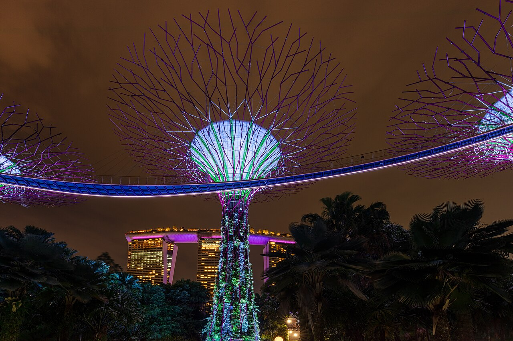

為什麼推薦
策略很重要：新加坡 = Christmas，吉隆坡 = Countdown。 原因是 12/31 新加坡住宿價格會突然暴漲，把最貴的那晚切掉，用「新加坡過聖誕＋吉隆坡跨年」拿到兩國體驗，同時繞開新加坡跨年夜的天價住宿。
①
優缺點
✅ 優點
- 聖誕氣氛全場最強 🎄（新加坡商場＋Gardens by the Bay）
- 安全性、交通全場最高
- 一次玩兩國
- 城市景觀最漂亮
⚠️ 缺點
- 三方案中最貴，CP值相對較低
- 新加坡消費水準高，需嚴格控制花費
- 新加坡→KL 需要規劃跨境交通
🎄 聖誕氣氛★★★★★
🎆 跨年氣氛★★★★☆
🛡️ 安全★★★★★
🚇 交通★★★★★
🍜 美食★★★★★
💰 CP值★★★☆☆
📷 城市景觀★★★★★
②
建議行程
12.24台灣 → 新加坡 🎄
Orchard Road・Marina Bay
- 下午／晚上：Orchard Road、ION Orchard、Christmas Light-Up
- Marina Bay（體力夠可加 Gardens by the Bay）
12.25Singapore Christmas Day 🎅
Gardens by the Bay 聖誕燈光秀
- 白天：Chinatown、Maxwell Food Centre、Marina Bay
- 晚上：Gardens by the Bay《Christmas Special Garden Rhapsody》
Supertree 在聖誕音樂下亮起來，是整趟最有「Christmas Movie」感的一晚。
12.26新加坡城市探索
Kampong Glam・Little India
- Kampong Glam、Sultan Mosque、Haji Lane
- Little India、Fort Canning、Clarke Quay
- 晚上 Marina Bay 夜景
12.27新加坡
免費／低價 或 付費體驗
免費／低價：Botanic Gardens、Jewel Changi、East Coast Park
付費：Gardens by the Bay Cloud Forest、Singapore Zoo、Night Safari
12.28Singapore → Kuala Lumpur 🇲🇾
省錢版巴士（5–6h）或省時版飛機（1h）
🏨 住宿：Bukit Bintang
12.29KL City
Merdeka Square・Petronas Towers
- Merdeka Square、Central Market、Chinatown
- KLCC、Petronas Towers
12.30Batu Caves＋TRX
上午洞穴・下午商圈
- 上午：Batu Caves
- 下午：The Exchange TRX、Pavilion、Bukit Bintang
12.31KL Countdown 🎆
KLCC・Pavilion・TRX・Bukit Bintang
等官方公布 2026→2027 活動後再決定最終地點。
01.01新年放空
這天刻意不安排重要景點
- 睡飽、Shopping、吃飯、咖啡、按摩
- 跨年完還排 08:00 行程的人，是行程表派來的殺手
01.02KL → 台灣
賦歸
③
預估花費／人
| 項目 | 預估 |
|---|
| 台灣 → Singapore／KL → 台灣 | NT$10,000～16,000 |
| Singapore → KL | NT$800～3,000 |
| 新加坡4晚住宿 | NT$5,000～8,000 |
| KL 5晚住宿 | NT$3,000～5,000 |
| 餐飲 | NT$6,000～8,000 |
| 交通 | NT$2,000～3,000 |
| 景點 | NT$1,500～3,500 |
| 總計 | 約 NT$28,000～46,500 |
🎯 建議控制目標：NT$33,000～40,000／人
若新加坡住乾淨的平價飯店、少搭 Grab、多吃 Hawker Centre、Singapore→KL 搭巴士、不上 Marina Bay Sands 高級酒吧，有機會控制在 NT$32,000～35,000／人。